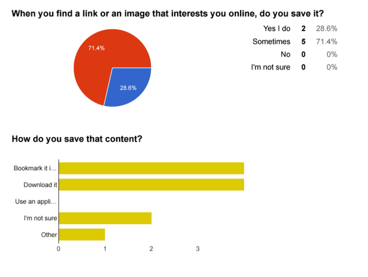

Keeper is a web application that allows users to collect and store content in a single system. Directly within Keeper, you can save links, store your favorite images and write notes. This would replace the need to for the browser’s bookmarking feature.
Role: UX Design
Platform: Desktop
As a consumer today, we see content everywhere we go. Offline and online, we are met with ads, videos, photography and text to drive our behavior as consumers. Even on mobile, it’s normal to wake up to several push notifications from our favorite apps -- most of which are dismissed. When you end up finding something that you love, saving and sharing that content becomes cumbersome. Bookmarks are forgettable and unmanageable. Storage also becomes an issue, especially on mobile.
Keeper aims to simplify this problem by building a consolidated space for all content types. Moreover, this would be an application where you can collaborate with friends or colleagues. As we design Keeper, we must communicate different pricing tiers and remember that the design should drive new sign-ups.
Before diving into any design tools, it was important to gather feedback from targeted Keeper Users. As a designer, I wanted to learn about their current habits when browsing content online. What apps are they using? Where and when are they browsing? Do they use any other tools, such as Evernote, or Google Docs? Learning a bit more about their pain points would help prioritize the roadmap for Keeper. You can take a look at the survey questions here.
I sent out the survey to 10 people and received an 80% response rate. Most respondents stated that they browse equally on desktop and mobile, and that they currently have trouble remembering where they save things. Bookmarking happens on the browser for some users, but most people use alternative apps, like Pinterest or Instagram. It seemed like with these apps, the type of content was very specific (for example, one user saves wedding related content only on Pinterest). There is still a need for a more accessible tool.
I’ve highlighted a few answers below that focus on saving behaviors.
To keep the design process focused on the user, I began exploring personas. In my Voice of Customer role at Lyft, I had the experience of creating customer journey maps to help our product and engineering teams empathize with some common reports we were seeing on the Support team. Some of the best practices I learned from that process was to create open-ended questions that leave out bias. With that in mind, I selected three potential users for more in-depth interviews. Having a natural conversation about their day-to-day tasks and activities helped contextualize the need for Keeper.
The first interview I found it challenging to simultaneously take notes and ask questions. For rounds two and three, I recorded them and kept my focus on the user. Later, I then listened to their answers and compiled notes. The common thread for all three users was that storage was an issue for them. Collaboration was not as important as I thought it would be, but it was still important for the users to quickly share (maybe within WhatsApp or imessage or email clients).
Below are the personas created:
After finalizing my personas, I mapped out user flows to ensure that the design is helping users go closer to their goals. I had a pretty clear understanding of what the business objectives were at this point (sign-up new users, convert to paying users ..etc), and it was time to outline this more clearly.
First, I listed out all potential user stories for both new users and returning users--- setting a priority to each. Doing this after my survey helped tremendously-- I realized that features like social sharing and importing content should not be initially prioritized.
I created the below user flows in order to simplify the experience for Keeper users. I took into consideration not just the survey results and requirements, but also the competitive analysis I did earlier in the project.
One thing I noticed in Keeper competitor’s is that too much information was asked too soon (example, credit card details). User flows helped me keep onboarding simple (but still sleek) for new keeper users. It was also important that returning users had intuitive ways to add new content and share it. I would be testing these flows later on.
I kicked off the logo design by creating a mental map of the word “keeper”. Jotting down related words helped me think of themes that could potentially inform the logo.
From there, I began to sketch out potential logos using a pen and paper. This was the most foreign process to me, but I really tried to let my ideas flow. I aimed to create a scalable logo that was bold, but friendly.
I wanted to give a feel of continuity with a capital ‘B’. Playing around with the letter also made me think of a heart shape. I tried combining these for the final logo.
Keeper has a clear mission of becoming a modern, approachable tool for storing and sharing content. To support this, I composed two different palettes:
I chose teal and orange as my complimentary colors. These two together felt very legible. I also played around with gradients for this palette and felt it would look great with Keeper. With Keeper, I want the focus to be on the product (creating and sharing content), so I chose tones that were not too bright or distracting. For this reason, I did not end up using the bright mint color. At the time, I was also inspired by makeup artists that I’ve been paying attention to-- the peachy tones were inspiring to me.
I chose a green monochromatic scheme with a small pop of orange. The orange is there for CTAs and areas of high emphasis. Green was chosen because it its not "too" professional-- everyday casual users of Keeper will feel welcome to use it. The color has a harmonious feel.
I used Balsamiq to mock-up some very rough versions of the home page and the dashboard. I made two versions of each screen to allow for wider usability testing.
Version one was longer and included every major element on the home page (testimonials and pricing). Version two was shortened. I wanted to keep the homa page focused solely on what Keeper is to improve the signup rate. Pricing and testimonials were moved to separate pages.
I moved forward with version two, creating a high-fidelity wireframe (using Illustrator). You can play with that prototype here.
Before making this pixel-perfect, I wanted more feedback from Keeper users. Using my wireframes below, I created a list of tasks and sat down and observed users as they tried to complete them using the prototype. The two biggest takeaways were that I needed to make keeper mobile-responsive, and that it was not entirely clear what keeper did. I needed to clean up the copy.
With the initial feedback in mind, I started to complete the final UI in Sketch. The design itself did not change much, but I felt it came to life with the addition of color and typography. The hardest part making the colors work together harmoniously. I ended up omitting one of my original color choices.
I used usertesting.com to recruit three random users for some final testing. They were asked to sign up for an account, and to add new content. As a follow-up, I asked the following questions:
From the questions above, I got a great mix of responses. All three users enjoyed the design and felt it was professional. I noticed that one of them had trouble finding the pricing page (which is now at the footer), so in future versions I would bring that back to the top nav. There was also a few dead-ends in my prototype, so I’ll need to make sure to test each screen more thoroughly.
I also did a five second test on UsabilityHub to get an initial impression of the homepage. Twenty-five users were asked what they think Keeper is about; I’ve summarized responses:
Collaboration and inspiration were the two most popular responses, which is a step in the right direction. Still, there was room for improvement.
I felt that a big component missing in the Dashboard was a search bar. Until now, the designs have been focused on small-scale use of Keeper. What if a user uploads thousands of images at once? Isolating content is necessary.
I decided to test this, as well as a new location for the “add” button” A preference test is used to compare two options A, and B (shown below) By far, the second version, with the add button wider and closer to the left panel was the preferred choice. This is also the version that includes a way to search across all keeper content. Considering most readers scan pages from left to right in an “F” shape, this location seems more intuitive.
You can play with the final protoype on InvisionApp.
Finally, I dove into the front-end portion of this course which allowed me to build Keeper using HTML, CSS and Javascript. For the sake of simplicity as I learn, I’ve used the layout and color palettes provided by Bloc. I deployed this on Github.
Thinking back to the design process itself, there were two things that stuck out as most challenging: javascript and logo design. Javascript was hard to learn because it was the first concept that was completely foreign to me, and with that, came additional plugins and frameworks that I did not think I was ready yet to learn (without learning the basics). After reviewing the syntax in Bloc and spending hours on various blogs/websites, I got the impression that this is a dynamic, evolving programming language. Designing my own Keeper logo also proved to be extremely difficult at first. I’ve never seen myself as an artist type, so it was hard to go through the process of sketching and wireframing an identity for a brand. I still don’t love the logo I came up with, but it came a long way. I enjoyed reading about different logo designers and their process.
The most rewarding process was adding the high-fidelity mockups into a prototype and having real people test it out. It’s important during usability testing that your users interacting with your design on their own device. I think that was interesting to see. I learned that your target audience and test group should mirror each other and be as specific as possible to deliver helpful results.